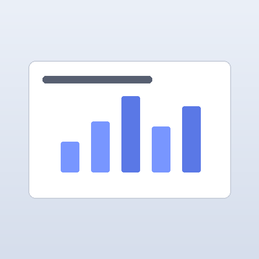
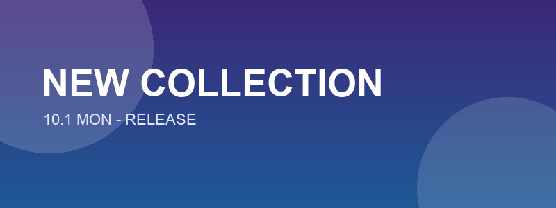
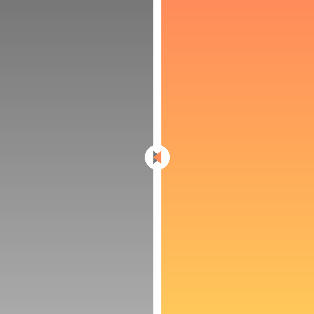

before bridge
こんなこと、していませんか？
 資料を、自分宛てにメールで送ったことがある
資料を、自分宛てにメールで送ったことがある Slackの「自分だけ」チャンネルに、URLを貼ったことがある
Slackの「自分だけ」チャンネルに、URLを貼ったことがある- LINEのKeepメモが、気づけば会社ファイルだらけ
- ファイルを一度クラウドに上げて、もう一方のデバイスで落とし直す
- コピー&ペーストのために、ブラウザとドキュメントを何度も往復する
それ、全部いらなくなります。
macOS & Windows 用・無料
コピーした内容が、もう1台にもそのまま届く。ファイルを一時的に置いておくこともできる。
ダウンロード不要、このままスクロールして触ってみてくださいbefore bridge
それ、全部いらなくなります。
smooth by design
細部の動きまで、それぞれの OS の作法にならう。バーを動かして見比べてみて。

history
文字も画像もファイルも、自動で記録される。ファイルは本物のファイルのまま返ってくる。再起動しても消えないから、探し回らなくていい。
multi-device
書斎のPCと、リビングのPCと。2台、3台と使うと履歴は混ざる。右クリックで、そのPCから届いたものだけに絞り込める。出どころは常にチップで一目でわかる。
quick paste
今使っているアプリの上で呼び出すと、カーソルの近くに履歴が浮かぶ。選ぶだけで、そのままそこに貼り付く。

バナー案_B案.png 15:00
Before-After比較.png 08:11privacy
コピーした内容や送ったファイルは、あなたのネットワークの中だけを通る。それだけ。
ファイルの一時置き場とクリップボード履歴は、単体でも動きます。他のデバイスとの同期だけ、同じ Wi-Fi / LAN への接続が必要です。
今のところは macOS と Windows だけです。スマホは今後の話です。
動きますが、公式にサポートしているのは macOS と Windows のみです。Linux はベストエフォートとなります。
無料で、ソースコードも MIT ライセンスで公開しています。外部サービスへの課金や登録も一切ありません。
台数の上限は設けていません。同じ同期キーを使っている端末であれば、いくつでも自動で見つけ合います。
使えます。相手が Mac か Windows かは関係なく、同じ同期キーであれば繋がります。
あります。同期は使わなくても、消えないクリップボード履歴・ファイルの一時置き場・その場でペーストは単体でそのまま使えます。複数端末は「使うと強力になる」おまけだと思ってください。
同じ LAN 上の、同じ「同期キー」を持つデバイスにしか送られません。外部のサーバーやクラウドは経由しません。
されています。同期キーから作った鍵で、やり取りする内容(メタデータもファイル本体も)を暗号化しています。合言葉を知らない相手には、同じネットワークにいても中身を読み取れません。
Mac と Windows の組み合わせで動き、クラウドを経由せず、通信も暗号化されていて、無料でオープンソースです。この5つを同時に満たすツールとして作りました。
getting started
Mac と Windows、それぞれの端末にインストーラーを落として起動するだけ。
同期したい端末同士で、同じ「同期キー」を設定する。それだけで専用の繋がりができる。
片方で ⌘C / Ctrl+C。もう片方で ⌘V / Ctrl+V。もう迷わない。
動作環境 — macOS 12 以降 / Windows 10 以降・同期には同じ Wi-Fi または LAN への接続が必要です